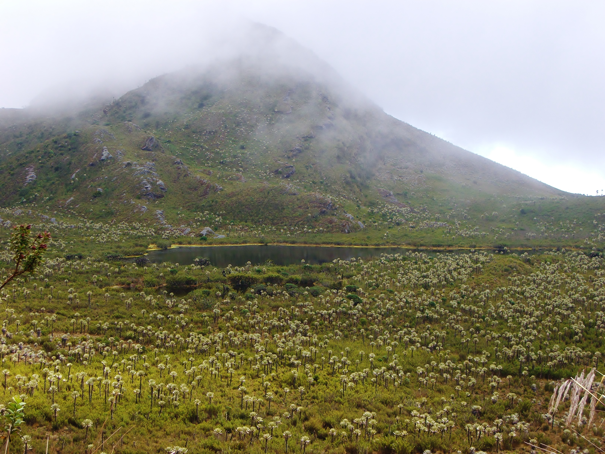
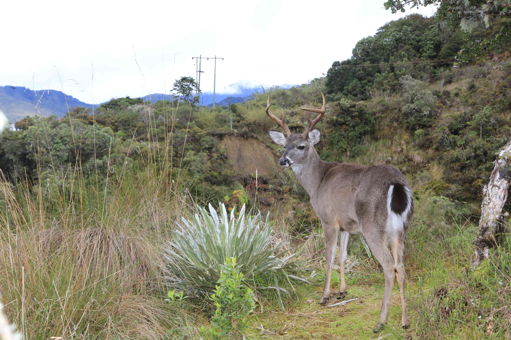
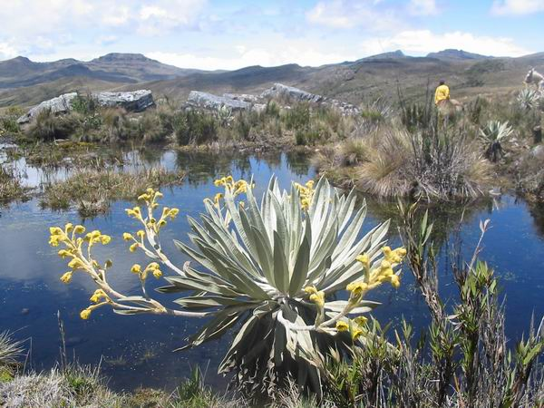
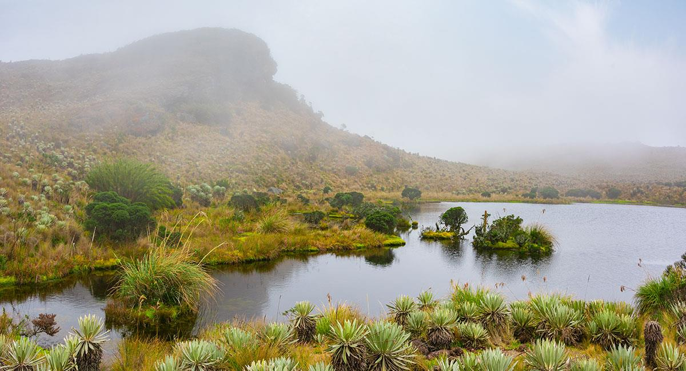
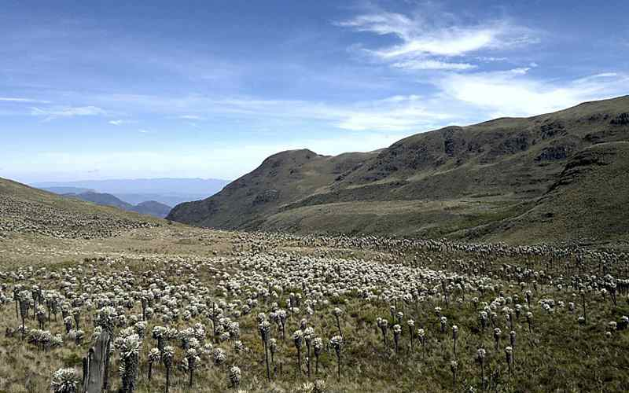
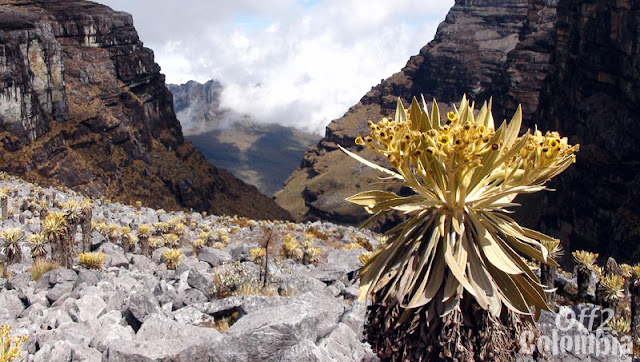
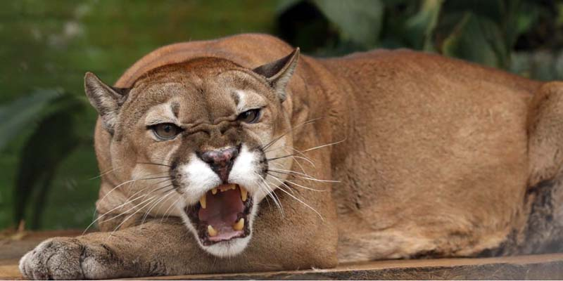
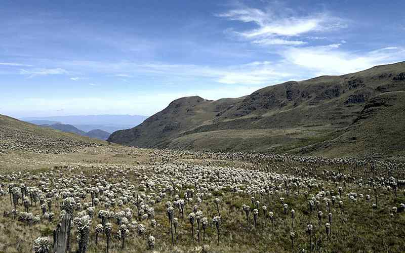
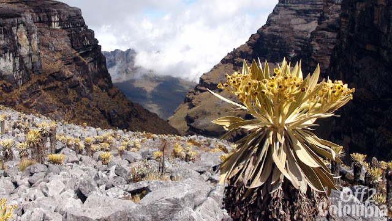
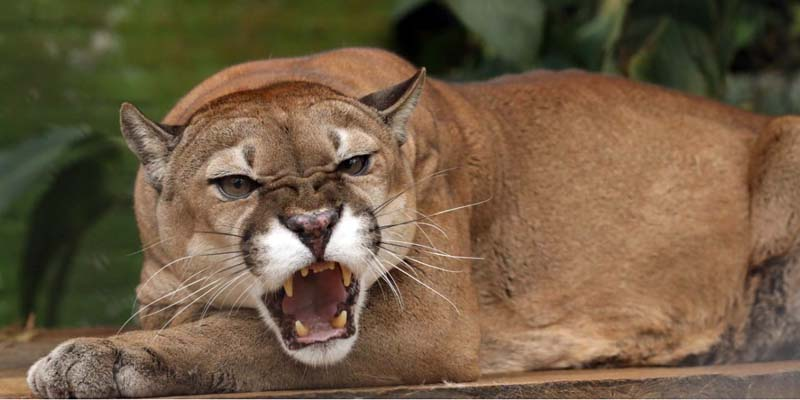

Colombia esta doado por la naturaleza, en especial en la region de Cundinamarca y Boyaca, donde se encuentran los parques naturales mas importantes del pais, con una gran variedad de flora y fauna, que se encuentran en peligro de extincion, por eso es importante cuidarlos y preservarlos.
Parques naturales principales
Cundinamarca




Boyaca
 




